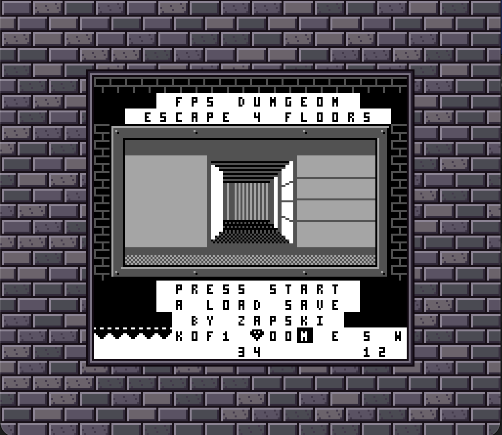
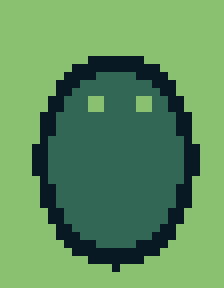

GB-FPS-Dungeon: Player Guide
You wake on the first of four floors of a dungeon. Each floor is a new random maze. Find the key, open the door, take the stairs down. Clear floor 4 to escape.

Controls
| Button | Action |
|---|---|
| Up / Down | Walk forward / back |
| Left / Right | Turn |
| B + Left / Right | Strafe (sidestep) |
| A | Shoot (about 4 shots a second, aims at screen centre) |
| Select | Open the automap (the game pauses) |
On the automap:
| Button | Action |
|---|---|
| Select or A | Close the map |
| B | Music on / off |
| Start | Save to a slot |
The screen
- Top row of the HUD: your hearts (up to 5),
Kkeys held,Fcurrent floor, a gem and your gold count, and a compass. The letter for the way you're facing is highlighted. - Bottom row: build number and frames per second. You can ignore these.
Items
Items are white. They get bigger as you walk closer. To pick one up, walk over it.
Key
Opens a door. It always lies in the dead end farthest from where you start. Keys don't carry over to the next floor.
Heart
Gives back one heart. If your hearts are full, it stays where it is, so you can come back for it later. Each floor has 2.
Gem
Adds to your gold. Each floor has 2. Your total shows on the win and game-over screens.
Map scroll
Shows the whole floor on the automap.
Stairs (down arrow)
Takes you to the next floor. You can't come back up. On floor 4 they lead outside, and you win.
Doors are the dark grey wall blocks marked D. Walk into one while you have a key to open it. The stairs are always in a small room behind the door, so you need the key first.
Enemies
Enemies hunt you through the corridors and hurt you on contact. When you get hit the screen flashes. When an enemy takes a shot but survives, it flashes white and stops for a moment.

Grunt
The dark blob. Dies to 1 shot on floors 1–2 and needs 2 shots on floors 3–4.
Bat
Flies at eye level and moves twice as fast as a grunt, but one shot kills it. Floor n has n bats.
Brute
Looks like a grunt drawn one size bigger. Slow (half grunt speed) and takes 3 shots. 1 on floor 3, 2 on floor 4.
Enemies more than about 10 steps away stay still until you come closer.
Saving and loading
There are 3 save slots, and each save also keeps the floor number.
- To save: press Select to open the map, then Start. Choose a slot with Left / Right and press Start or A. B cancels.
- To load: once you have a save, the title and GAME OVER screens show A LOAD SAVE. Press A, choose the slot, and you continue from where you saved.
Winning and losing
- Losing all your hearts ends the run. The GAME OVER screen shows the floor you reached, your kills and your gold.
- Taking the stairs on floor 4 wins the game. The win screen shows your kills, your time in seconds (time on the map doesn't count) and your gold.
Press Start on either screen to begin a new run.
Tips
- Strafe (B + Left/Right) to look around a corner without walking into an enemy.
- Check the map often. Scrolls show the whole floor, and the map pauses the game, so you can plan your route.
- Bats are fast but weak. Turn to face them and shoot.
- On floors 3–4, back away while you shoot brutes. They're too slow to catch you.
- If you're at full health, leave the heart. It'll still be there when you need it.
Super Game Boy
On a Super Game Boy (or an emulator set to SGB mode) the game is framed by a stone-brick border. On a regular Game Boy nothing changes.